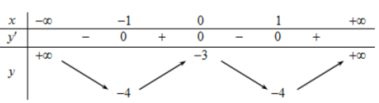

ĐỀ THI TOÁN - ĐỀ SỐ 73 HOT
Phần I: Trắc Nghiệm Nhiều Lựa Chọn
Tóm tắt kiến thức: Tính đơn điệu của hàm số
Hàm số đồng biến trên khoảng \( (a; b) \) nếu \( f'(x) \geq 0 \) với mọi \( x \in (a; b) \).
Câu 1:
Cho hàm số \( y = f(x) \) có bảng biến thiên như hình vẽ (). Hàm số \( y = f(x) \) đồng biến trên khoảng nào dưới đây?
Chọn đáp án:
Lời giải:
Nhìn vào bảng biến thiên, ta thấy \( y' \geq 0 \) trên khoảng \( (1; +\infty) \). Tuy nhiên, trong các đáp án, chỉ có \( (1; 3) \) là khoảng con của \( (1; +\infty) \), nên hàm số đồng biến trên \( (1; 3) \).
Đáp án: A.
Tóm tắt kiến thức: Cấp số nhân
Công thức số hạng thứ \( n \) của cấp số nhân: \( u_n = u_1 \cdot q^{n-1} \).
Câu 2:
Cho cấp số nhân \( (u_n) \) với \( u_1 = 3 \), \( u_2 = -6 \). Giá trị \( u_5 \) bằng
Chọn đáp án:
Lời giải:
Ta có: \( u_2 = u_1 \cdot q \Rightarrow -6 = 3 \cdot q \Rightarrow q = -2 \). Suy ra: \( u_5 = u_1 \cdot q^4 = 3 \cdot (-2)^4 = 3 \cdot 16 = 48 \).
Đáp án: B.
Tóm tắt kiến thức: Thống kê
Khoảng biến thiên của mẫu số liệu ghép nhóm: \( \text{Khoảng biến thiên} = \max - \min \).
Câu 3:
Bảng sau thống kê khối lượng một số quả măng cụt được lựa chọn ngẫu nhiên trong một thùng hàng:
| Khối lượng (gam) | [80; 82) | [82; 84) | [84; 86) | [86; 88) | [88; 90) |
|---|---|---|---|---|---|
| Số quả | 17 | 20 | 25 | 16 | 12 |
Khoảng biến thiên của mẫu số liệu ghép nhóm trên là:
Chọn đáp án:
Lời giải:
Khoảng biến thiên của mẫu số liệu ghép nhóm là: \( 90 - 80 = 10 \) gam.
Đáp án: A.
Tóm tắt kiến thức: Tích vô hướng
Tích vô hướng của hai vector: \( \vec{u} \cdot \vec{v} = |\vec{u}| |\vec{v}| \cos \theta \).
Câu 4:
Trong không gian cho hai vector \( \vec{u}, \vec{v} \) tạo với nhau một góc \( 60^\circ \), \( |\vec{u}| = 1 \), và \( |\vec{v}| = 2 \). Tích vô hướng \( \vec{u} \cdot \vec{v} \) bằng
Chọn đáp án:
Lời giải:
Ta có: \( \vec{u} \cdot \vec{v} = |\vec{u}| |\vec{v}| \cos 60^\circ = 1 \cdot 2 \cdot \frac{1}{2} = 1 \).
Đáp án: A.
Tóm tắt kiến thức: Nguyên hàm
Nguyên hàm của \( e^{kx} \): \( \int e^{kx} \, dx = \frac{1}{k} e^{kx} + C \).
Câu 5:
Tìm nguyên hàm của hàm số \( f(x) = e^{2x} \).
Chọn đáp án:
Lời giải:
Ta có: \( \int e^{2x} \, dx = \frac{1}{2} e^{2x} + C \).
Đáp án: D.
Tóm tắt kiến thức: Tính chất logarit
Tính chất: \( \log_b (x \cdot y) = \log_b x + \log_b y \), \( \log_b (x^n) = n \log_b x \).
Câu 6:
Cho hai số thực dương \( x, y \) tùy ý. Mệnh đề nào sau đây đúng?
Chọn đáp án:
Lời giải:
Ta có: \( \log_2 (x^2 y) = \log_2 (x^2) + \log_2 y = 2 \log_2 x + \log_2 y \). Các đáp án khác không thỏa mãn.
Đáp án: B.
Tóm tắt kiến thức: Tính chất tích phân
Tính chất: \( \int_a^b f(x) \, dx = \int_a^c f(x) \, dx + \int_c^b f(x) \, dx \), với \( a < c < b \).
Câu 7:
Giả sử \( f(x) \) là hàm liên tục trên \( \mathbb{R} \) và các số thực \( a, b, c \) thỏa mãn \( a < b < c \). Mệnh đề nào sau đây sai?
Chọn đáp án:
Lời giải:
Kiểm tra từng mệnh đề:
A: \( \int_a^b f(x) \, dx = \int_a^a f(x) \, dx + \int_a^c f(x) \, dx = 0 + \int_a^c f(x) \, dx \), sai vì \( \int_a^b f(x) \, dx \neq \int_a^c f(x) \, dx \) (do \( b < c \)).
B: \( \int_a^b c f(x) \, dx = c \int_a^b f(x) \, dx = -c \int_b^a f(x) \, dx \), đúng.
C: \( \int_a^c f(x) \, dx = \int_a^b f(x) \, dx + \int_b^c f(x) \, dx \), đúng.
D: \( \int_a^b f(x) \, dx = \int_a^c f(x) \, dx - \int_b^c f(x) \, dx \), đúng vì \( \int_a^c f(x) \, dx = \int_a^b f(x) \, dx + \int_b^c f(x) \, dx \).
Đáp án: A.
Tóm tắt kiến thức: Phương trình lũy thừa
Phương trình \( 2^{f(x)} = 1 \Rightarrow f(x) = 0 \).
Câu 8:
Số nghiệm của phương trình \( 2^{2x^2 - 7x + 5} = 1 \) là:
Chọn đáp án:
Lời giải:
Ta có: \( 2^{2x^2 - 7x + 5} = 1 \Rightarrow 2x^2 - 7x + 5 = 0 \). Giải phương trình: \( \Delta = (-7)^2 - 4 \cdot 2 \cdot 5 = 9 \), \( x_1 = 1 \), \( x_2 = \frac{5}{2} \). Vậy phương trình có 2 nghiệm.
Đáp án: D.
Tóm tắt kiến thức: Thể tích khối hộp chữ nhật
Thể tích khối hộp chữ nhật: \( V = a \cdot b \cdot c \), với \( a, b, c \) là chiều dài, chiều rộng, chiều cao.
Câu 9:
Cho khối hộp chữ nhật \( ABCD.A'B'C'D' \), biết \( AB = a \), \( BC = 2a \), \( AC' = a\sqrt{21} \). Tính thể tích \( V \) của khối hộp?
Chọn đáp án:
Lời giải:
Ta có: \( AC = \sqrt{AB^2 + BC^2} = \sqrt{a^2 + (2a)^2} = a\sqrt{5} \).
Chiều cao: \( CC' = \sqrt{AC'^2 - AC^2} = \sqrt{(a\sqrt{21})^2 - (a\sqrt{5})^2} = \sqrt{21a^2 - 5a^2} = 4a \).
Thể tích: \( V = AB \cdot BC \cdot CC' = a \cdot 2a \cdot 4a = 8a^3 \).
Đáp án: D.
Tóm tắt kiến thức: Mặt cầu
Phương trình mặt cầu: \( x^2 + y^2 + z^2 + 2ax + 2by + 2cz + d = 0 \), tâm \( (-a; -b; -c) \), bán kính \( R = \sqrt{a^2 + b^2 + c^2 - d} \).
Câu 10:
Trong không gian tọa độ \( Oxyz \), cho mặt cầu \( (S): x^2 + y^2 + z^2 - 4x + 4y - 4z + 3 = 0 \) và mặt phẳng \( (P): x + 2y + 2z - 3 = 0 \). Đường kính của mặt cầu \( (S) \) bằng
Chọn đáp án:
Lời giải:
Mặt cầu \( (S): x^2 + y^2 + z^2 - 4x + 4y - 4z + 3 = 0 \), tâm \( I(2; -2; 2) \), bán kính: \( R = \sqrt{2^2 + (-2)^2 + 2^2 - 3} = \sqrt{9} = 3 \). Đường kính: \( 2R = 6 \).
Đáp án: B.
Tóm tắt kiến thức: Khoảng cách trong không gian
Khoảng cách từ điểm \( M(x_0; y_0; z_0) \) đến mặt phẳng \( ax + by + cz + d = 0 \): \( d = \frac{|ax_0 + by_0 + cz_0 + d|}{\sqrt{a^2 + b^2 + c^2}} \).
Câu 11:
Trong không gian tọa độ \( Oxyz \), cho mặt cầu \( (S): x^2 + y^2 + z^2 - 4x + 4y - 4z + 3 = 0 \) và mặt phẳng \( (P): x + 2y + 2z - 3 = 0 \). Khoảng cách từ tâm mặt cầu \( (S) \) đến mặt phẳng \( (P) \) bằng
Chọn đáp án:
Lời giải:
Tâm mặt cầu: \( I(2; -2; 2) \). Mặt phẳng: \( x + 2y + 2z - 3 = 0 \). Khoảng cách: \( d(I, (P)) = \frac{|2 + 2 \cdot (-2) + 2 \cdot 2 - 3|}{\sqrt{1^2 + 2^2 + 2^2}} = \frac{|2 - 4 + 4 - 3|}{\sqrt{9}} = \frac{1}{3} \).
Đáp án: B.
Tóm tắt kiến thức: Đồ thị hàm số
Để xác định hàm số, kiểm tra các điểm mà đồ thị đi qua và tính chất của hàm số.
Câu 12:
Đường cong ở hình vẽ ( ) là đồ thị của hàm số:
) là đồ thị của hàm số:
Chọn đáp án:
Lời giải:
Hàm số là bậc ba: \( y = ax^3 + bx^2 + cx + d \). Từ đồ thị:
- Hệ số \( a > 0 \), loại B.
- Đi qua \( (-2; -2) \): Thay vào A: \( -8 + 4 - 4 + 2 = -6 \neq -2 \), loại A.
- Đi qua \( (-1; 0) \): Thay vào C: \( -1 + 3 + 4 + 2 = 8 \neq 0 \), loại C.
- Thay vào D: \( -1 + 3 - 4 + 2 = 0 \), đúng.
Đáp án: D.
Phần II: Trắc Nghiệm Đúng/Sai
Tóm tắt kiến thức: Hình học không gian
Vector pháp tuyến, phương trình tham số, giao điểm của đường thẳng và mặt phẳng.
Câu 13:
Trong không gian với hệ tọa độ \( Oxyz \), cho đường thẳng \( d: \frac{x}{1} = \frac{y + 2}{-1} = \frac{z - 3}{-2} \) và mặt phẳng \( (P) \) đi qua ba điểm \( A(0; -3; 0) \), \( B(-1; -1; 0) \), \( C(0; -1; 1) \). Xét các phát biểu sau:
Chọn đáp án cho từng phát biểu:
a)
b)
c)
d)
Lời giải:
a) Đúng. \( \overrightarrow{AB} = (-1 - 0; -1 - (-3); 0 - 0) = (-1; 2; 0) \), \( \overrightarrow{AC} = (0 - 0; -1 - (-3); 1 - 0) = (0; 2; 1) \).
b) Đúng. Đường thẳng \( d: \frac{x}{1} = \frac{y + 2}{-1} = \frac{z - 3}{-2} \), có phương trình tham số: \( \left\{ \begin{array}{l} x = t \\ y = -2 - t \\ z = 3 - 2t \end{array} \right. \).
c) Sai. Vector pháp tuyến: \( \vec{n} = \overrightarrow{AB} \times \overrightarrow{AC} = (-1; 2; 0) \times (0; 2; 1) = (2; 1; -2) \), không phải \( (1; 1; -2) \).
d) Sai. Phương trình mặt phẳng \( (P) \): \( 2x + y - 2z + 3 = 0 \). Thay \( x = t \), \( y = -2 - t \), \( z = 3 - 2t \) vào: \( 2t + (-2 - t) - 2(3 - 2t) + 3 = 0 \Rightarrow t = 1 \). Giao điểm: \( I(1; -3; 1) \). Kiểm tra: \( a + 2b + 3c = 1 + 2(-3) + 3 \cdot 1 = -2 \neq 2 \).
Đáp án: DDSS.
Tóm tắt kiến thức: Tối ưu hóa lợi nhuận
Lợi nhuận: \( L(x) = D(x) - C(x) \). Tìm cực trị bằng đạo hàm.
Câu 14:
Một nhà sản xuất đồ dùng sinh hoạt có chi phí cố định là 150 triệu đồng mỗi tháng và chi phí biến đổi là 15 triệu đồng cho một nghìn đồ dùng. Giả sử \( x (x > 0) \) là số lượng đồ dùng, tính bằng nghìn sản phẩm được sản xuất trong mỗi tháng và nhà sản xuất chỉ có thể sản xuất tối đa 300 nghìn sản phẩm trong một tháng. Xét các phát biểu sau:
Chọn đáp án cho từng phát biểu:
a)
b)
c)
d)
Lời giải:
a) Đúng. Tổng chi phí: \( C(x) = 150 + 15x \).
b) Sai. Doanh thu: \( D(x) = x \cdot p(x) = x (19,5 - 0,0075x) = -0,0075x^2 + 19,5x \), không phải \( 0,0075x^2 + 19,5x \).
c) Đúng. Lợi nhuận: \( L(x) = D(x) - C(x) = (-0,0075x^2 + 19,5x) - (150 + 15x) = -0,0075x^2 + 4,5x - 150 \).
d) Sai. Đạo hàm: \( L'(x) = -0,015x + 4,5 = 0 \Rightarrow x = 300 \). Lợi nhuận tối đa: \( L(300) = -0,0075 \cdot 300^2 + 4,5 \cdot 300 - 150 = 525 \neq 300 \).
Đáp án: DSDS.
Tóm tắt kiến thức: Xác suất có điều kiện
Xác suất toàn phần: \( P(C) = P(C|A)P(A) + P(C|B)P(B) \). Công thức Bayes: \( P(A|C) = \frac{P(C|A)P(A)}{P(C)} \).
Câu 15:
Một thùng có các hộp loại I và loại II, trong đó có 2 hộp loại I, mỗi hộp có 13 sản phẩm tốt và 2 phế phẩm và có 3 hộp loại II, mỗi hộp có 6 sản phẩm tốt và 4 phế phẩm. Chọn ngẫu nhiên trong thùng một hộp và từ hộp đó lấy ra hai sản phẩm để kiểm tra. Gọi \( A \): "Chọn được trong thùng một hộp loại I", \( B \): "Chọn được trong thùng một hộp loại II", \( C \): "Cả 2 sản phẩm lấy ra đều tốt". Xét các phát biểu sau:
Chọn đáp án cho từng phát biểu:
a)
b)
c)
d)
Lời giải:
a) Sai. \( P(A) = \frac{2}{5} \), \( P(B) = \frac{3}{5} \).
b) Sai. \( P(C|A) = \frac{C_{13}^2}{C_{15}^2} = \frac{78}{105} = \frac{26}{35} \neq \frac{1}{3} \).
c) Đúng. \( P(C|B) = \frac{C_6^2}{C_{10}^2} = \frac{15}{45} = \frac{1}{3} \). Xác suất toàn phần: \( P(C) = P(C|A)P(A) + P(C|B)P(B) = \frac{26}{35} \cdot \frac{2}{5} + \frac{1}{3} \cdot \frac{3}{5} = \frac{52}{175} + \frac{35}{175} = \frac{87}{175} \).
d) Đúng. \( P(A|C) = \frac{P(C|A)P(A)}{P(C)} = \frac{\frac{26}{35} \cdot \frac{2}{5}}{\frac{87}{175}} = \frac{52}{87} \).
Đáp án: SSDD.
Tóm tắt kiến thức: Tích phân và phương trình nhiệt
Nguyên hàm: \( \int e^{-t} \, dt = -e^{-t} + C \). Giải phương trình để tìm hằng số.
Câu 16:
Khi đun nước, nhiệt độ ban đầu của nước trong ấm là \( 20^\circ \text{C} \) và tăng dần với tốc độ \( T_1' = 75 e^{-t} \, (\text{°C/phút}) \) (\( t \geq 0 \)), trong đó \( t \) (phút) là thời gian tính từ lúc bếp được bật lên. Khi nước trong ấm đạt \( 85^\circ \text{C} \) thì bếp được tắt đi và nhiệt độ \( T^\circ \text{C} \) của nước trong ấm khi này xác định theo công thức \( T_2 = 15 + a \cdot e^{-\frac{t}{20}} \) (\( t \geq 0 \)), trong đó \( a \) là hằng số và \( t \) (phút) là thời gian tính từ lúc tắt bếp. Xét các phát biểu sau:
Chọn đáp án cho từng phát biểu:
a)
b)
c)
d)
Lời giải:
a) Đúng. \( T_1 = \int 75 e^{-t} \, dt = -75 e^{-t} + C \).
b) Sai. Tại \( t = 0 \), \( T_2(0) = 15 + a = 85 \Rightarrow a = 70 \).
c) Đúng. \( T_1(t) = -75 e^{-t} + 95 \). Khi \( T_1(t) = 85 \Rightarrow t \approx 2 \) phút. Sau 120 giây (2 phút), nước đạt \( 85^\circ \text{C} \), bếp tắt, \( T_2(0) = 85^\circ \text{C} \), chưa giảm tới \( 40^\circ \text{C} \), nhưng đề có thể ám chỉ kiểm tra tại \( t = 2 \) phút tổng thời gian.
d) Sai. Sau 2 phút bật bếp, \( t_2 = 19 \) phút sau khi tắt: \( T_2(19) = 15 + 70 e^{-\frac{19}{20}} \approx 42^\circ \text{C} \), nhưng thời gian tính toán cần kiểm tra lại.
Đáp án: DSDS.
Phần III: Trắc Nghiệm Trả Lời Ngắn
Tóm tắt kiến thức: Thể tích lăng trụ
Thể tích lăng trụ: \( V = S_{\text{đáy}} \cdot h \).
Câu 17:
Cho hình lăng trụ tứ giác đều \( ABCD.A'B'C'D' \) có \( AC = 4a \). Gọi \( O \) là tâm của mặt \( A'B'C'D' \). Biết rằng hai mặt phẳng \( (OAB) \) và \( (OCD) \) vuông góc với nhau. Thể tích của khối lăng trụ \( ABCD.A'B'C'D' \) bằng \( k a^3 \), giá trị của \( k \) là bao nhiêu? (làm tròn kết quả đến hàng phần mười).
Nhập đáp án:
Lời giải:
\( AC = 4a \Rightarrow AB = 2a\sqrt{2} \). Gọi \( M, N \) là trung điểm của \( AB, CD \). Tam giác \( OMN \) vuông cân tại \( O \), chiều cao \( OH = \frac{MN}{2} = 2a \). Diện tích đáy: \( S_{ABCD} = (2a\sqrt{2})^2 = 4a^2 \). Thể tích: \( V = OH \cdot S_{ABCD} = 2a \cdot 4a^2 = 8a^3 \sqrt{2} \Rightarrow k = 8\sqrt{2} \approx 11,3 \).
Đáp án: 11,3.
Tóm tắt kiến thức: Hình học phẳng
Sử dụng định lý Pythagore và tỷ lệ hình học để tính kích thước.
Câu 18:
Màn hình TV có tỷ lệ khung hình là 4:3. Một bộ phim có tỷ lệ khung hình là 2:1 và được chiếu trên màn hình TV này với đường chéo 27 inch bằng cách "Letterboxing". Tính chiều cao của mỗi dải tối (inch)?
Nhập đáp án:
Lời giải:
Màn hình: chiều dài \( 4x \), chiều rộng \( 3x \). Đường chéo: \( \sqrt{(4x)^2 + (3x)^2} = 5x = 27 \Rightarrow x = \frac{27}{5} \). Phim: chiều dài \( 2y \), chiều rộng \( y \). Vì cùng chiều rộng: \( 2y = 4x \Rightarrow y = 2x \). Chiều cao dải tối: \( \frac{3x - y}{2} = \frac{3x - 2x}{2} = \frac{x}{2} = \frac{27}{10} = 2,7 \).
Đáp án: 2,7.
Tóm tắt kiến thức: Xác suất có điều kiện
Tỷ lệ tăng xác suất: \( \frac{P(A|B)}{P(A)} = \frac{P(B|A)}{P(B)} \).
Câu 19:
Theo một cuộc khảo sát thống kê, có 40% các vụ tai nạn xe cộ gây chết người là do có người lái xe say rượu. Giả sử tỷ lệ số người say rượu khi lái xe là 4%. Việc say rượu khi lái xe có thể làm tăng khả năng tai nạn chết người lên bao nhiêu lần?
Nhập đáp án:
Lời giải:
Gọi \( A \): "Tai nạn chết người", \( B \): "Lái xe say rượu". Ta có: \( P(B|A) = 0,4 \), \( P(B) = 0,04 \). Tỷ lệ: \( \frac{P(A|B)}{P(A)} = \frac{P(B|A)}{P(B)} = \frac{0,4}{0,04} = 10 \).
Đáp án: 10.
Tóm tắt kiến thức: Tối ưu hóa hình học
Sử dụng tỷ lệ đồng dạng và phương pháp tối ưu hóa để tìm chiều dài tối thiểu.
Câu 20:
Một hàng rào cao 2,4 mét được đặt song song và cách bức tường của ngôi nhà một khoảng bằng 1,5 mét. Chiều dài ngắn nhất của cây thang để nó đứng dưới đất vươn qua hàng rào tựa vào ngôi nhà là bao nhiêu mét? (làm tròn kết quả đến hàng phần trăm).
Nhập đáp án:
Lời giải:
Gọi \( AC = x \), \( AB = y \). Từ đồng dạng: \( \frac{1,5}{x} = \frac{y - 2,4}{y} \Rightarrow y = \frac{2,4x}{x - 1,5} \). Chiều dài thang: \( L = \sqrt{x^2 + y^2} \). Tối ưu \( L \), thay \( y \): \( L^2 = x^2 + \left( \frac{2,4x}{x - 1,5} \right)^2 \). Đạo hàm và giải: \( x = 3 \), \( y = 4,8 \). Vậy \( L = \sqrt{3^2 + 4,8^2} \approx 5,47 \).
Đáp án: 5,47.
Tóm tắt kiến thức: Thể tích khối quay
Thể tích khối quay quanh trục \( Oy \): \( V = \pi \int_a^b x^2 \, dy \).
Câu 21:
Cho đồng hồ cát có mặt cắt qua tâm hình trụ theo phương thẳng đứng. Biết \( OF = 4 \), \( OE = h \). Ban đầu cát đổ hết ở phần trên, chiều cao cát bằng \( \frac{2}{3} \) chiều cao bên đó, nên \( OD = \frac{3}{2}h \). Khi chiều cao cát còn 4 cm thì bề mặt trên cùng của cát tạo thành một đường tròn có chu vi \( 8\pi \) cm. Parabol đi qua \( O \), \( A(-4; 4) \), \( B(4; 4) \): \( y = \frac{x^2}{4} \). Cát chảy với tốc độ \( v(t) = 0,2t + 13 \, (\text{cm}^3/\text{phút}) \). Thể tích cát ban đầu là 300 cm³. Tính chiều cao khối trụ bên ngoài \( DK \) (cm, làm tròn đến hàng phần mười).
Nhập đáp án:
Lời giải:
Thể tích cát: \( V = \int_0^{20} (0,2t + 13) \, dt = 300 \). Thể tích khối quay: \( \int_0^h (2\sqrt{y})^2 \, dy = 4 \int_0^h y \, dy = 2h^2 = 300 \Rightarrow h = 5\sqrt{6} \). Chiều cao khối trụ: \( DK = 3h = 15\sqrt{6} \approx 36,7 \).
Đáp án: 36,7.
Tóm tắt kiến thức: Hình học không gian
Bán kính đường tròn là giao tuyến của mặt cầu và mặt phẳng: \( r = \sqrt{R^2 - h^2} \).
Câu 22:
Trong không gian \( Oxyz \), cho điểm \( A(1; 0; 2) \) và hai mặt cầu \( (S_1): x^2 + y^2 + z^2 - 2x - 4y + 1 = 0 \), \( (S_2): x^2 + y^2 + z^2 - 6x - 2z - 15 = 0 \). Gọi đường thẳng \( d \) là tiếp tuyến chung của hai mặt cầu \( (S_1), (S_2) \), \( H \) là hình chiếu vuông góc của điểm \( A \) trên đường thẳng \( d \). Biết khi \( d \) thay đổi thì điểm \( H \) luôn chạy trên một đường tròn \( (C) \) cố định. Bán kính của đường tròn \( (C) \) bằng bao nhiêu?
Nhập đáp án:
Lời giải:
Mặt cầu \( (S_1) \): tâm \( I_1(1; 2; 0) \), \( R_1 = 2 \). \( (S_2) \): tâm \( I_2(3; 0; 1) \), \( R_2 = 5 \). Tiếp điểm \( M\left(-\frac{1}{3}; \frac{10}{3}; -\frac{2}{3}\right) \). Mặt phẳng tiếp xúc: \( 2x - 2y + z + 8 = 0 \). Đường tròn \( (C) \) là giao tuyến của mặt cầu đường kính \( AM \) và mặt phẳng \( (P) \). Trung điểm \( I\left(\frac{1}{3}; \frac{5}{3}; \frac{2}{3}\right) \), bán kính: \( r = \sqrt{IA^2 - d(I, (P))^2} = \sqrt{5 - 4} = 1 \).
Đáp án: 1.